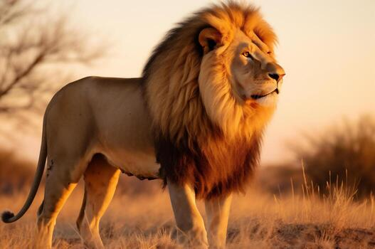
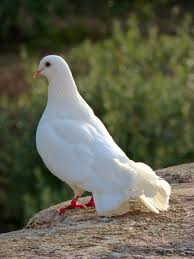

Jesús
The lion is one of my favorite animals because, in a way, it represents the Lion of Judah, who is JesusChrist. The strong, victorious king and descendant of the tribe of Judah.

Jesús
The lion is one of my favorite animals because, in a way, it represents the Lion of Judah, who is JesusChrist. The strong, victorious king and descendant of the tribe of Judah.

Holy Spirit
In the Bible, the dove primarily represents the Holy Spirit, symbolizing purity, peace, innocence, and the divine presence. Whenever I am walking down the street and see a dove, I feel that the Holy Spirit is with me.

Toby
Toby is my best friend. He always goes everywhere with me, runs to greet me when I get home, and is always there even when push him away. Quite simply, he is my best friend.
Main Page